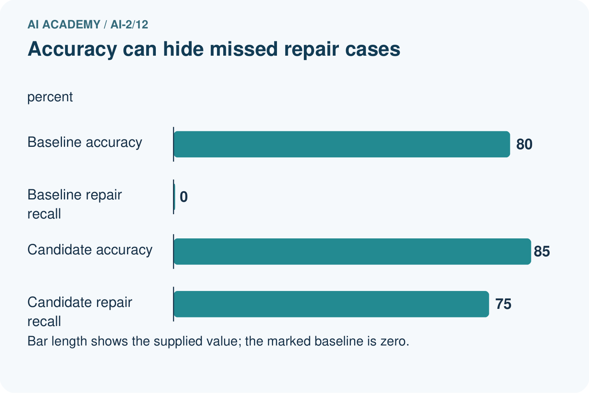
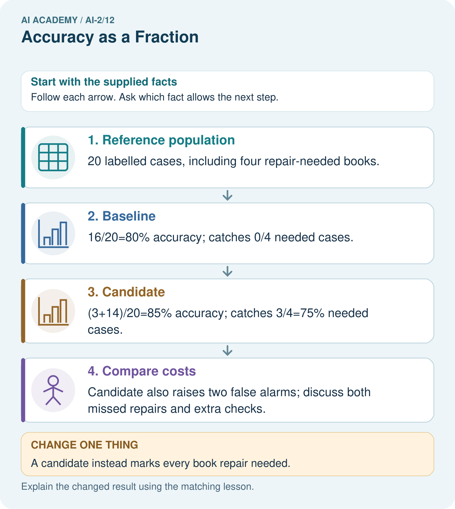
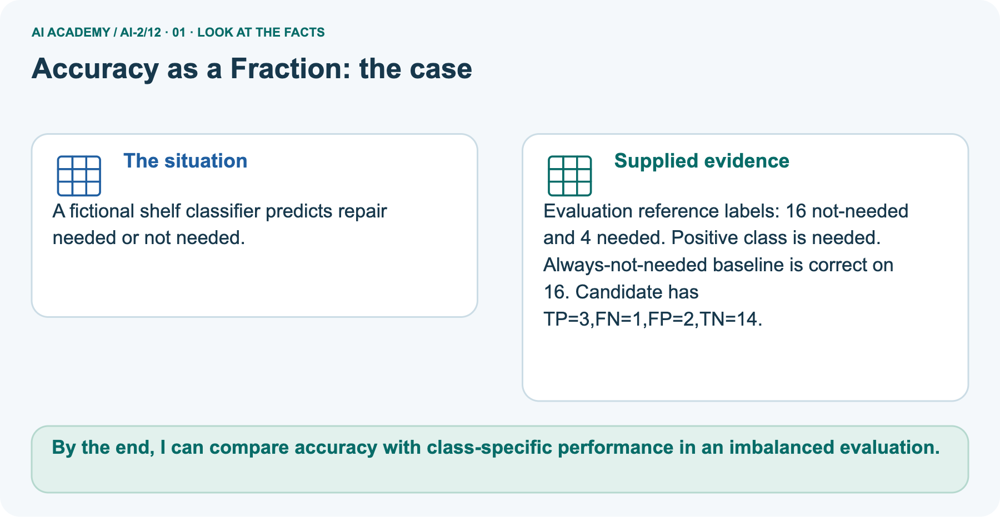
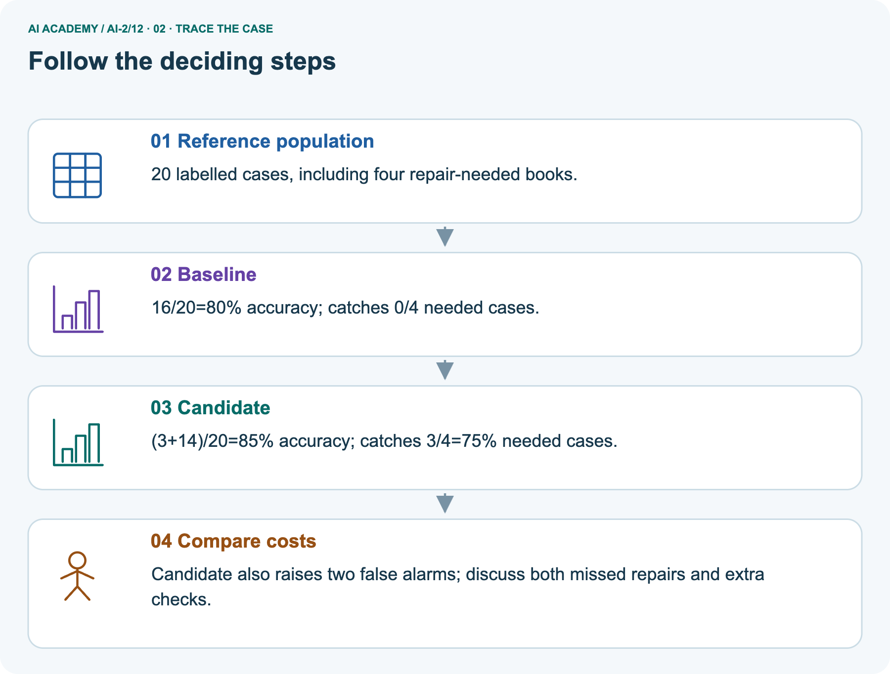
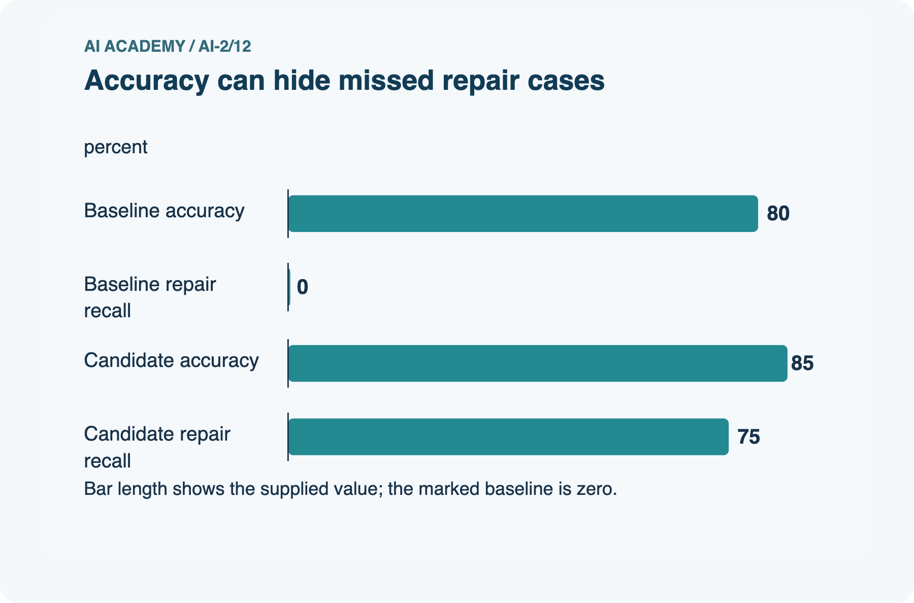
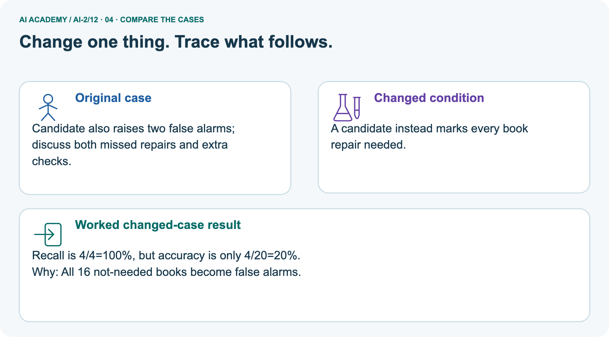
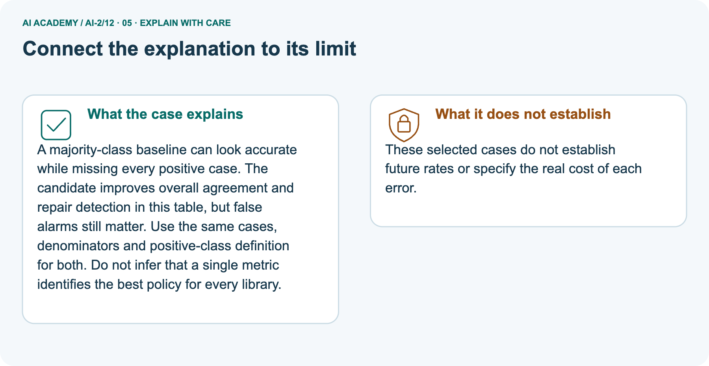
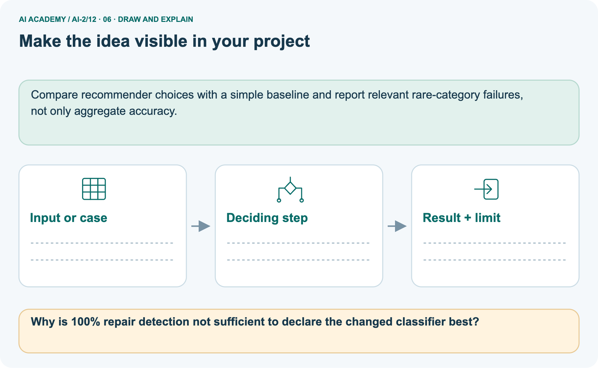

AI Academy · Level 2 · Grade 7 · Week 12 · Teacher guide
Accuracy as a Fraction
Learn to understand, design, build, test and explain AI systems responsibly.
Project: Transparent Book Recommender
Teacher guide · 1 of 9
Accuracy as a Fraction
Prepare Accuracy as a Fraction: check the target, prerequisites, resources and adaptable teaching schedule.
Teach the learning cycle
Primary target: Explain why overall accuracy can hide failure on a less common class
| Session | Sequence and minutes | Resources |
|---|---|---|
| Session 1 · Understand · 45 min | 0–7: recall and prerequisite; 7–15: inspect the concrete case and predict; 15–30: teacher models the worked trace; 30–40: learners explain a step using the text and visual; 40–45: check the core idea. | Sections 1–6; record the brief recall in the workbook. |
| Session 2 · Practise · 45 min | 0–5: retrieve the procedure; 5–15: W2 completion practice; 15–23: explain and check with a partner; 23–30: each learner answers the misconception check; 30–40: targeted reteaching or a harder variation; 40–45: prepare the investigation. | Sections 7–10; use the matching workbook W2 and misconception check. |
| Session 3 · Investigate and transfer · 45 min | 0–5: retrieve the decision rule; 5–20: investigate or trace; 20–30: start the independent case; 30–38: connect the project; 38–43: act on feedback; 43–45: plan the return check. | Sections 9 and 11–14. Give extra time to finish the full task set; use Section 15 when the week includes a coding lab. |
This is a starting allocation of 135 minutes, not a validated duration. Preserve all named topics. Schedule extra time for connected examples, the full investigation, independent cases and project building.
Repeated copies of a case share one recorded attempt; they are not new evidence.
Case exposure check: this source example appears in ai-2/12, ai-4/16. Reuse a familiar case for recall or modelling; verify that the case used to assess transfer has not already received feedback.
Retrieval answer guidance
Training and Testing
Without opening the old lesson, explain one key idea from Training and Testing. Give an example and a mistake that the idea helps you avoid.
Look for: Choose a split unit that matches the intended prediction claim
Reference example, not the only acceptable wording: Training fits the model; validation compares development choices; test evaluates after choices are fixed.
Repeatedly selecting by the test score uses that set for development, so it is no longer an untouched final evaluation.
Features and Distractors
Without opening the old lesson, explain one key idea from Features and Distractors. Give an example and a mistake that the idea helps you avoid.
Look for: Choose recorded properties that preserve distinctions needed for a stated task
Reference example, not the only acceptable wording: Use length and width measured before the decision. State the order as length in cm, then width in cm; the record is 12, 8.
The target is fits or too large under the guide, and this card is fits because both equalities are included.
Colour and card number are not needed for this rule; the final inspection sticker copies the answer and is unavailable before inspection.
Debugging Strategies
Without opening the old lesson, explain one key idea from Debugging Strategies. Give an example and a mistake that the idea helps you avoid.
Look for: Design revealing tests for a function
Reference example, not the only acceptable wording: 4, 0 and 6.
Use the student module and workbook section with this exact week title. The worked case, independent question and answers below form one aligned lesson sequence.
What the learner must demonstrate
Class A gets 8/10 cases right and class B gets 18/30 right. Compute each rate and the combined rate. Why is averaging the two percentages misleading here?
Concept to explain
Accuracy is correct predictions divided by all predictions.
| Term | Meaning |
|---|---|
| accuracy | The number of correct predictions divided by the total number of scored predictions. |
| numerator | The top number of a fraction, identifying the counted portion. |
| denominator | The bottom number of a fraction, identifying the number of equal parts or total cases considered. |
| percentage | A proportion expressed per hundred; multiply a fraction by 100 to express it as a percent. |
Prepare the class
Use the supplied scenario, student illustrations and blank paper. For numeric work, offer counters or a calculator after learners show the setup. Fictional records are supplied; personal data and paid accounts are unnecessary.
Alternative compact allocation
This compact option is not the full-week schedule. Use the main teaching cycle and allow extra sessions for the investigation, independent work and project.
Allow 80 minutes: recall 8; explanation 12; worked demonstration 15; guided practice 20; independent assessment 15; project and reflection 10. Extend the lab into a second session when needed.
Preparation for the connected explanation
Teach two 45-minute sessions. Begin with a majority guess that looks successful under overall accuracy, then keep both class denominators visible.
Introduce balanced accuracy as an equal average of two correct fractions, without treating it as a universal replacement for task-specific evaluation.
Readiness answer
They are in the blocked-reference row and clear-prediction column: the lower-left cell. These are missed blocked cases.
Printed lesson and workbook
Twenty counters with sixteen labelled clear and four blocked
Blank confusion matrices and fraction strips
Optional Python 3 editor with no packages required
Apply the connected idea: Summaries with counts and proportions
Teach Week 16 as a two-session investigation using fictional data. A fictional poll asks whether a short activity was useful. Responses are Yes, No or Unknown.
We will report Yes among known responses and also disclose unknown responses. Choosing a denominator changes the question being answered.
Assess the three stated outcomes through the independent task, not by copying the worked result.
Readiness answer
3/12, which is 1/4.
Python 3 editor with a fresh local practice file
Paper trace table and the student workbook
Fictional input records from this lesson; no real student identifiers
End goal for the pictorial case
By the end, I can compare accuracy with class-specific performance in an imbalanced evaluation.
This added worked case illustrates the week’s main idea. Retain all original and connected topics; schedule its practice within the teaching cycle.
Teacher guide · 2 of 9
Explain the mechanism
Model Accuracy as a Fraction using the supplied case, labelled mechanism and reasoning. Make the scope of each conclusion explicit.
Input → Process → Output
Trace the information. At each stage, ask what changed and how you could test it.
Which stage could fail even when the other two are correct? Explain:
Predict first. Then check each step. A correct answer without visible reasoning is incomplete evidence.
1. Model A: 7 correct out of 10 → 7/10 = 70%.
2. Model B: 18 correct out of 20 → 18/20 = 90%.
3. Model B has higher measured accuracy on these tests.
4. Still ask: were the test cases fair and were some errors more costly?
Recalculate, retrace, or restate the reasoning in your own representation:
CHECK Did the evidence answer the exact question? Did the total, path, or source record stay consistent?
Concrete teaching case
The teaching case
Nine of twelve held-out classifications are correct.
The teaching case
Compute accuracy and state the denominator.
Exact explanation to model
Why the result follows
9/12=3/4=75%. Count all scored cases, including errors.
Explain the added worked example
Explain the added worked example · 1
Accuracy counts all correct predictions and divides by all evaluated examples. Each example has equal weight, so a common class contributes more to the score. A high result can hide failure on a rare class.
This week keeps the confusion matrix visible and checks both classes separately.
Explain the added worked example · 2
New fictional training data has 16 clear and 4 blocked labels. Its majority baseline predicts clear for every query; choose that rule from training, not evaluation labels.
A separate evaluation set also contains 16 clear and 4 blocked cases. A frozen candidate and the baseline are evaluated on the same 20 records.
Explain the added worked example · 3
Rows are references and columns are predictions, ordered clear then blocked. Blocked is positive. Both methods get 16/20=80 percent accuracy. The baseline misses all four blocked cases.
The candidate finds all four but falsely flags four clear cases. The same score conceals a different tradeoff.
Explain the added worked example · 4
The output is baseline 80.0 50.0, then candidate 80.0 87.5. In each output line the first percentage is ordinary accuracy and the second is balanced accuracy.
For the candidate, the clear-class correct fraction is 12/16=75 percent and the blocked-class fraction is 4/4=100 percent. Their equal average is 87.5 percent.
Explain the added worked example · 5
For the baseline, those fractions are 16/16=100 percent and 0/4=0 percent, averaging 50 percent. The code assumes a two-by-two table of nonnegative integer counts in the stated order.
It stops when either reference class is absent. Then report the observed counts and the unavailable class result; do not invent a denominator or silently substitute zero.
Key terms
| Term | Meaning |
|---|---|
| Class imbalance | Unequal numbers of examples in different classes |
| Majority baseline | A rule that always predicts the most common training label |
| Class-specific correct fraction | Correct predictions for one reference class divided by the number of examples of that class |
| Balanced accuracy | The average of the class-specific correct fractions with equal weight for each class |
Apply the connected idea: Summaries with counts and proportions
A fictional poll asks whether a short activity was useful. Responses are Yes, No or Unknown. We will report Yes among known responses and also disclose unknown responses.
Choosing a denominator changes the question being answered.
The printed proportion is 0.75, or 75 percent, among four known responses. Yes among all five supplied responses is 0.6, or 60 percent. Both calculations are correct when labelled; they describe different denominators.
Unknown must not silently become No.
1/2 = 50 percent among known; 1/4 = 25 percent among all supplied. Exit: No. The denominator is known volunteers, and participation may not represent all students.
Model the reasoning aloud
Use the complete worked example below before asking learners to complete W2. Reveal a small part, invite a prediction, then explain the deciding step.
These teacher notes contain solutions; do not reveal the independent case answer during modelling.
Same overall score different class results
Model the reasoning aloud · 6
Balanced accuracy is a metric choice, not a repair to the classifier or a guarantee of safety. It gives classes equal influence in this summary; it does not encode the actual consequences of false alarms and missed cases.
Four blocked evaluation examples are also too few for a strong general claim.
| Thinking move | Teacher prompt |
|---|---|
| Plan | What is given? What is the question? Which procedure fits these facts? |
| Do | Point to each input and intermediate step in the worked trace. Name the rule that allows the next step. |
| Check | Does the output answer the question? Which assumption or limitation prevents a larger claim? |
Use the diagram and verbal explanation together. Ask learners to match a sentence to a specific visual step; do not assign learners fixed visual or auditory learning styles.
A pictorial worked case: Accuracy as a Fraction
A fictional shelf classifier predicts repair needed or not needed.
The facts we will use
Supplied facts
Evaluation reference labels: 16 not-needed and 4 needed. Positive class is needed.
Supplied facts
Always-not-needed baseline is correct on 16. Candidate has TP=3,FN=1,FP=2,TN=14.


Read the picture one step at a time
Why this result follows
Why the result follows
A majority-class baseline can look accurate while missing every positive case. The candidate improves overall agreement and repair detection in this table, but false alarms still matter.
Use the same cases, denominators and positive-class definition for both. Do not infer that a single metric identifies the best policy for every library.
What this example does not establish
Keep the stated limit
These selected cases do not establish future rates or specify the real cost of each error.
Change one thing in the pictured case
Change one thing
Change: A candidate instead marks every book repair needed.
Predicted result
Prediction: Recall is 4/4=100%, but accuracy is only 4/20=20%.
Why the result follows
Reason: All 16 not-needed books become false alarms.
Ask while showing the picture
Ask while showing the picture · 7
Cover the result. Ask learners to name the inputs and predict the next step. Uncover one step, connect the icon to the actual procedure, and explain its evidence. Then change the supplied condition and compare.
The picture is a representation; it does not document execution of a real AI model.
Teacher guide · 3 of 9
Demonstrate and guide practice
Demonstrate Accuracy as a Fraction, reduce support deliberately and check individual reasoning before discussing answers.
Board sequence
1. Put the facts on the board
Write the given facts: Nine of twelve held-out classifications are correct.
2. State the decision to explain
Write the question to explain: Compute accuracy and state the denominator.
3. Reveal the worked reasoning
Reveal after predictions: 9/12=3/4=75%. Count all scored cases, including errors.
Hold back the independent task
Keep for an independent attempt: A classifier gets 9 of 12 cases right. Another gets 8 of 10 right. Calculate both accuracies and identify the larger fraction.
Classroom dialogue
Ask the class
Ask: Which facts are given, and which would we have to assume? Learners mark relevant details before discussing answers.
Language to model
Say: Predict first. Show the rule, information path or calculation that would produce the result. A correct guess is not yet an explanation.
Reveal reasoning one step at a time. Explain why a tempting alternative fails. Write units and denominators for arithmetic, trace conditions for decisions, and identify supporting sources for claims.
In pairs, one learner solves while the other checks evidence; exchange roles. Remove the worked answer before independent assessment.
Model these guided questions
Guided: baseline has FP=0,FN=4, finding none of four blocked cases. Candidate has FP=4,FN=0, finding all four but adding four false alarms. Both have sixteen correct predictions.
Equal averaging gives baseline (100+0)/2=50 percent and candidate (75+100)/2=87.5 percent. Exit: request the full labelled matrix, class counts, sampling method, training-derived baseline and task consequences.
The worked always-clear rule misses all four blocked cases.
Case-specific teaching sequence
| Stage | Teacher action |
|---|---|
| Session 1 start to 7 minutes | Retrieve false negatives and reference-row totals from Week 13. |
| 7 to 18 minutes | Use counters to score the always-clear baseline and complete W1. |
| 18 to 32 minutes | Compare the candidate matrix. Calculate ordinary and class-specific correct fractions in W2. |
| 32 to 45 minutes | Trace the code and read the visual. Answer the guided question and explain equal class weighting. |
| Session 2 start to 8 minutes | Retrieve each denominator and why a high overall score can hide rare-class failure. |
| 8 to 20 minutes | Complete W3 with a changed class mix. Separate the arithmetic assumption from claims about deployment. |
| 20 to 35 minutes | Collect W4 independently before support. Require fractions before rounded percentages and the error tradeoff. |
| 35 to 45 minutes | Use W5 and the exit question to discuss missing classes. Offer the fresh retry after feedback and record support. |
Teach the connected idea
| Stage | Teacher action |
|---|---|
| Session 1 start to 7 minutes | Retrieve the prerequisite and explain the purpose in the opening section. |
| 7 to 20 minutes | Read the worked example and diagram; ask learners to trace each step aloud. |
| 20 to 33 minutes | Complete W1 and W2, then compare predictions with observed results. |
| 33 to 45 minutes | Collect the guided prediction before running; discuss a mismatch and its cause. |
| Session 2 start to 8 minutes | Retrieve the main rule without showing the previous answer. |
| 8 to 20 minutes | Use W3 to diagnose and repair the stated failure; rerun an earlier case. |
| 20 to 35 minutes | Collect W4 independently, including code or plan, predictions and explanations, before hints. |
| 35 to 45 minutes | Discuss W5 and the exit; use the fresh retry when support was needed. |
Reduce help deliberately
Completion practice
Completion task: For the worked candidate [[12,4],[0,4]], give ordinary accuracy, both class-specific correct fractions, balanced accuracy, false positives and false negatives. Compare with the baseline.
Reasoning to listen for
Teacher check: Accuracy 16/20=80 percent. Clear fraction 12/16=75 percent; blocked fraction 4/4=100 percent; balanced accuracy (75+100)/2=87.5 percent. FP=4,FN=0.
Baseline accuracy is also 80 percent but balanced accuracy is 50 percent with FP=0,FN=4.
Start by identifying the given inputs together. Leave the intermediate steps blank. If needed, model one step, then withdraw that help on the next step. Move to a full trace only when the partial trace is understood.
For partners, alternate explainer and checker; collect a response from every learner before discussion.
Individual reasoning check
Use the worked case for Accuracy and class imbalance. Proposed explanation: “High accuracy means both classes work well”. Decide whether this explanation is supported.
Point to the step or supplied fact that decides; explain your repair if needed.
Expected repair
Expected correction: A common class can dominate the overall count. Inspect each reference-class denominator and its errors.
Collect explanations, not only yes/no votes. If a misunderstanding is common, re-model the relevant step for the class.
If it affects a few learners, give a short targeted group explanation while others solve a more demanding variation.
Connected teaching cycle: Summaries with counts and proportions
Target: Count categories with a stated denominator
Reserve further sessions for this topic; the 135-minute primary plan does not absorb all added content.
Completion practice: Poll A has 2 Yes of 4 known and Poll B has 3 Yes of 6 known. Compare proportions and counts.
Reasoning to listen for
Teacher check: Both are 50 percent. Counts and sample sizes differ: 2/4 versus 3/6.
Individual check: For Summaries with counts and proportions, use its worked case to evaluate this proposed explanation: “A successful run proves the conclusion”. Explain the deciding step.
Expected repair
Expected correction: A percentage from a few volunteers is not automatically representative of the whole class. Report counts, the question, who responded and exclusions alongside the percentage.
Apply the same support, independent transfer and delayed-review decisions to the named connected-topic workbook tasks.
Pictorial practice question
Why is 100% repair detection not sufficient to declare the changed classifier best?
Reasoned teacher answer
It catches all four repairs but wrongly flags all 16 others, creating many extra checks; consequences must be assessed.
Changed-case reasoning: Recall is 4/4=100%, but accuracy is only 4/20=20%. All 16 not-needed books become false alarms.
Collect each learner’s explanation before discussion. Use the first missing connection between input, deciding step and result to choose support. This question is worked-case practice, not fresh mastery evidence.
Teacher guide · 4 of 9
Run the weekly evidence lab
Run the Accuracy as a Fraction investigation and use the first unsupported step to choose a teaching response.
Words You Can Use to Reason
A definition matters when you can recognize the idea, use it, and contrast it with a near-miss.
Predict → Test → Record → Explain
Keep expected and actual results separate. Surprises are useful data when recorded honestly.
Score two prediction sheets, simplify or convert each fraction, compare percentages, then inspect which cases were wrong.
What did the hardest test teach you that the normal test did not?
Make the lab runnable
Use the concrete case as the shared normal case and the independent question as a second case. Each pair creates a boundary or missing-information case and predicts its result before testing.
Keep the expected result separate from an observed mistake.
| Record | What to capture |
|---|---|
| Input or evidence | Exact data, instruction or claim |
| Expected result | Answer or safe fallback declared before the run |
| Observed result | Actual result, including errors |
| Explanation | Rule, calculation or evidence explaining the outcome |
| Next test | One justified change and a new prediction |
Diagnose and reteach
For guessing, return to given facts and request a trace. For vocabulary without application, use one example and one non-example. For arithmetic errors, check the setup before the calculation.
Finish with a different uncoached case before recording mastery.
Address these additional misconceptions
High accuracy means both classes work well: A common class can dominate the overall count. Inspect each reference-class denominator and its errors.
Balanced accuracy fixes the model: It changes the summary weighting, not any prediction or underlying error.
An absent class has zero measured performance: Its fraction has a zero denominator and is unavailable. Report missing coverage rather than inventing a value.
Check these misconceptions
A successful run proves the conclusion: A percentage from a few volunteers is not automatically representative of the whole class. Report counts, the question, who responded and exclusions alongside the percentage.
Matching the example is enough: Require the new W4 case, explicit predictions and an explanation. Fresh retry: No, Yes, Unknown, No, Unknown gives 1 Yes of 3 known, about 33.3 percent, with 2 unknown.
Accept 1/3 without rounding.
A convenient shortcut preserves meaning: Dividing by known when it equals 0 causes ZeroDivisionError. Test known > 0 before division and report no known responses if none exist.
Reporting 0 percent would wrongly suggest known responses with no Yes answers.
Match the support to the first error
| What the response shows | Next teaching action |
|---|---|
| Missing or misread facts | Read the case aloud, mark supplied versus unknown facts, and let the learner restate it. |
| Wrong procedure | Return to the deciding step in the worked case. Contrast it with the proposed incorrect explanation. |
| Arithmetic or implementation error | Trace intermediate values or lines; preserve the first mismatch and retry that step. |
| Correct result without a reason | Ask for a trace and a changed case before marking independent understanding. |
| An unsupported wider claim | Ask which supplied evidence supports the claim and which further observation would be needed. |
Offer an oral explanation, drawing, enlarged visual or fewer examples when that removes a reading/writing barrier. Keep the same reasoning goal.
Stretch secure learners by changing a boundary or assumption and asking them to defend the effect, not simply by assigning more of the same questions.
Teacher guide · 5 of 9
Assess and explain the answers
Use the Accuracy as a Fraction questions, teacher keys and criteria after the relevant attempts. Previously discussed cases are practice; protect the separately selected independent task.
Worked case answer
Teacher key · Worked case answer
9/12=3/4=75%. Count all scored cases, including errors.
Independent question
Independent question · withhold the key
A classifier gets 9 of 12 cases right. Another gets 8 of 10 right. Calculate both accuracies and identify the larger fraction.
Expected independent answer
Teacher key · Expected independent answer
9/12 is 75%; 8/10 is 80%. The second fraction is higher, although differing test sets can make a direct model comparison unfair.
What counts as evidence
| Criterion | 0 points | 1 point | 2 points |
|---|---|---|---|
| Result | Incorrect or absent | Partly correct | Correct with necessary conditions |
| Reasoning | No supporting trace | Some steps | Clear mechanism, calculation or source support |
| Limit | Overclaims certainty | Vague limitation | Relevant uncertainty or missing fact |
| Transfer | Copies without adapting | Adapts with prompts | Solves a changed case independently |
Use 6/8 as a classroom checkpoint, with 2 required for both Result and Reasoning. This is a proposed teaching rule, not a validated certification threshold.
Do not count a coached answer as independent mastery; correct unsafe or unsupported claims regardless of total.
Feedback
Ask the learner to find the evidence that challenges this claim: “More correct answers always means higher accuracy.” Keep the first attempt and an uncoached retry separate.
Original transfer answer
Teacher key · Original transfer answer
A=80%, B=60%; combined 26/40=65%. The unweighted average is 70%, which gives the ten-case class the same weight as the thirty-case class. State whether the question concerns a typical class or a typical tested case.
Explanations for the additional workbook examples
W1 Score the majority baseline
Workbook question · W1
Training has 16 clear and 4 blocked labels. State the majority rule. On the worked evaluation, give its matrix, accuracy, false positives and false negatives with blocked positive. Explain why 80 percent is incomplete.
Teacher reasoning · W1
The training-majority rule always predicts clear. Matrix [[16,0],[4,0]] gives 16/20=80 percent, FP=0,FN=4. It misses all four blocked cases, so the overall score hides complete failure on that evaluated class.
W2 Compare both class fractions
Workbook question · W2
For the worked candidate [[12,4],[0,4]], give ordinary accuracy, both class-specific correct fractions, balanced accuracy, false positives and false negatives. Compare with the baseline.
Teacher reasoning · W2
Accuracy 16/20=80 percent. Clear fraction 12/16=75 percent; blocked fraction 4/4=100 percent; balanced accuracy (75+100)/2=87.5 percent. FP=4,FN=0.
Baseline accuracy is also 80 percent but balanced accuracy is 50 percent with FP=0,FN=4.
W3 Explain a changed class mix
Workbook question · W3
For the illustrative 8-clear 8-blocked set, use baseline [[8,0],[8,0]] and candidate [[6,2],[0,8]]. Calculate ordinary and balanced accuracy for each. Explain what stayed fixed and what this example does not prove.
Teacher reasoning · W3
Baseline ordinary 8/16=50 percent and balanced (100+0)/2=50 percent. Candidate ordinary 14/16=87.5 percent and balanced (75+100)/2=87.5 percent. Within-class fractions stayed fixed while class counts changed.
This arithmetic assumption does not prove unchanged real-world behavior on a new population.
W4 Assess a new comparison independently
Workbook question · W4
New training labels have a clear majority. A separate evaluation has 18 clear and 2 blocked records.
The always-clear baseline is [[18,0],[2,0]] and candidate is [[15,3],[1,1]], with reference rows and clear then blocked on both axes. Calculate ordinary accuracy, both class fractions and balanced accuracy for each.
Give candidate FP and FN, then explain why the metrics do not choose an automatic winner.
Teacher reasoning · W4
Baseline accuracy 18/20=90 percent; class fractions 100 percent and 0 percent; balanced accuracy 50 percent.
Candidate accuracy 16/20=80 percent; clear fraction 15/18=5/6 about 83.3 percent, blocked fraction 1/2=50 percent; balanced accuracy (5/6+1/2)/2=2/3 about 66.7 percent. Candidate FP=3,FN=1.
It finds one blocked case but adds three false alarms; task consequences and the small sample matter.
W5 Limit claims from missing classes
Workbook question · W5
An evaluation contains ten clear cases and no blocked cases. All predictions are clear. State ordinary accuracy, explain why blocked performance is unavailable, and describe how our code handles the missing class.
Teacher reasoning · W5
Ordinary accuracy is 10/10=100 percent on the observed clear cases. The blocked-class fraction has denominator zero, so it cannot be measured.
Our two-class summary function stops with ValueError; report the missing coverage instead of claiming perfect performance on both classes.
Summaries with counts and proportions — W1 State the denominator
In the worked poll, why is the known denominator 4 rather than 5?
Only Yes and No are included; one Unknown is excluded and must be disclosed.
Summaries with counts and proportions — W2 Compare proportions
Poll A has 2 Yes of 4 known and Poll B has 3 Yes of 6 known. Compare proportions and counts.
Both are 50 percent. Counts and sample sizes differ: 2/4 versus 3/6.
Summaries with counts and proportions — W3 Repair zero division
All three responses are Unknown. What should the program report?
No known responses, with 3 unknown. Do not divide by zero or report 0 percent as a measured proportion.
Summaries with counts and proportions — W4 Summarize independently
Process Yes, Yes, No, Unknown, No, Yes. Report Yes count, known count, unknown count and Yes proportion among known.
3 Yes, 5 known, 1 unknown; 3/5 = 0.6 = 60 percent.
Summaries with counts and proportions — W5 Avoid overclaiming
Three of five known volunteers said Yes. Can you say 60 percent of all students agree?
No. The denominator is known volunteers, and participation may not represent all students.
Assess independent transfer
Independent question · withhold the key
Selected case: New training labels have a clear majority. A separate evaluation has 18 clear and 2 blocked records.
The always-clear baseline is [[18,0],[2,0]] and candidate is [[15,3],[1,1]], with reference rows and clear then blocked on both axes. Calculate ordinary accuracy, both class fractions and balanced accuracy for each.
Give candidate FP and FN, then explain why the metrics do not choose an automatic winner.
Selected case answer
Teacher key · Selected case answer
Baseline accuracy 18/20=90 percent; class fractions 100 percent and 0 percent; balanced accuracy 50 percent.
Candidate accuracy 16/20=80 percent; clear fraction 15/18=5/6 about 83.3 percent, blocked fraction 1/2=50 percent; balanced accuracy (5/6+1/2)/2=2/3 about 66.7 percent. Candidate FP=3,FN=1.
It finds one blocked case but adds three false alarms; task consequences and the small sample matter.
| Dimension | Evidence required |
|---|---|
| Explanation | Names the applicable idea or procedure and ties it to the supplied facts. |
| Trace and result | Preserves the given inputs and shows the relevant intermediate steps; distinguishes a prediction from an observed execution. |
| Limits | States the assumptions, missing evidence or conditions under which the result would change. |
Teacher key · Selected case answer
Record each dimension as not yet, with support, or independent. Accept a valid alternative procedure with a defensible trace.
Do not penalise an honestly recorded model failure if the learner correctly explains its evidence and limits.
Feedback that the learner uses
Name the earliest unsupported step and give one action to repair it. Have the learner make that repair now and explain why. Then assess the relevant skill on a fresh, fully specified case.
Confirm it was not previously practised with feedback; solve and check the new case before assigning it. A follow-up design prompt is a starting brief, not automatically an equivalent test.
Teacher guide · 6 of 9
Connect and extend learning
Connect Accuracy as a Fraction to Transparent Book Recommender, adapt support and plan a later changed-case check.
Transparent Book Recommender
Report correct recommendations / all test users, alongside the raw test count.
Keep the decision, input, result, explanation and remaining limitation in the project evidence record. Retrieve this record next week rather than restarting the project.
Support and stretch
Trace one record or condition at a time with counters and labelled columns. Stretch: introduce a tie, boundary or missing field and declare its handling policy before rerunning.
Exit reflection
Ask for one decision the learner can now justify and one situation requiring more evidence or human review. Confidence ratings are separate from correct independent performance.
Bridge to the next week
Next: Week 13: Types of Classification Error. Retrieve today’s evidence and identify what carries forward and what is new.
Support and fresh reassessment
Use counters and write each fraction with its reference-class total before converting to a percentage. Supply blank denominator boxes rather than answers.
Extension: express ordinary accuracy as the class-size-weighted average of the two correct fractions; for the candidate use (16/20)(12/16)+(4/20)(4/4)=16/20.
Require W4 baseline ordinary 90 percent and balanced 50 percent; candidate ordinary 80 percent and balanced 2/3 about 66.7 percent, with FP=3,FN=1.
Fresh retry: evaluation 12 clear and 4 blocked, baseline [[12,0],[4,0]], candidate [[9,3],[1,3]], training majority clear. Baseline ordinary 75 percent, class fractions 100 and 0 percent, balanced 50 percent.
Candidate ordinary 12/16=75 percent, both class fractions 75 percent, balanced 75 percent, FP=3,FN=1. Require both denominators and no automatic-winner claim.
Week 15 covers precision recall and denominators. Carry forward the matrix and the question answered by each fraction.
Teacher reference: https://scikit-learn.org/stable/modules/generated/sklearn.metrics.balanced_accuracy_score.html (equal average of class recalls; reviewed 2026-09-28).
Readiness and reassessment for Summaries with counts and proportions
Use fraction bars with separate unknown cards. Extension: show both denominators side by side with explicit labels.
Independent W4 evidence: 3 Yes, 5 known, 1 unknown; 3/5 = 0.6 = 60 percent. Record whether the learner needed no help, a hint or explanation.
Fresh retry: No, Yes, Unknown, No, Unknown gives 1 Yes of 3 known, about 33.3 percent, with 2 unknown. Accept 1/3 without rounding.
Plan the delayed return
Suggested return points in this level: ai-2/13, ai-2/15, ai-2/18. Use actual classroom dates, adjusting for holidays and gaps. One, three and six teaching weeks are scheduling choices, not a claimed optimal spacing.
At a delayed check, ask for the idea from memory and a changed application. Compare with the earlier independent response and record support used.
For a new level, revisit the previous capstone before checking the new prerequisites.
| Record | Teacher evidence |
|---|---|
| Learner code and date | |
| Concept and case used; prior exposure | |
| Explanation / trace / limits | |
| Support and first repair | |
| Changed case and delayed outcome | |
| Next teaching action |
Use the evidence to choose reteaching or the next step. A completed page, confidence rating or attractive project does not by itself demonstrate understanding.
Project evidence from this case
Compare recommender choices with a simple baseline and report relevant rare-category failures, not only aggregate accuracy.
Teacher guide · 7 of 9
Prepare, teach and assess
Use this preparation summary alongside the detailed Accuracy as a Fraction lesson; it is a checklist rather than a replacement for the full sequence.
Teaching target
Teaching target: Explain why overall accuracy can hide failure on a less common class
Prepare the labelled worked-case picture, the matching workbook, fictional input cards and a place for individual responses. No paid AI account is required for the paper reasoning activities.
| Session | Plan | Resources |
|---|---|---|
| Session 1 · Understand · 45 min | 0–7: recall and prerequisite; 7–15: inspect the concrete case and predict; 15–30: teacher models the worked trace; 30–40: learners explain a step using the text and visual; 40–45: check the core idea. | Sections 1–6; record the brief recall in the workbook. |
| Session 2 · Practise · 45 min | 0–5: retrieve the procedure; 5–15: W2 completion practice; 15–23: explain and check with a partner; 23–30: each learner answers the misconception check; 30–40: targeted reteaching or a harder variation; 40–45: prepare the investigation. | Sections 7–10; use the matching workbook W2 and misconception check. |
| Session 3 · Investigate and transfer · 45 min | 0–5: retrieve the decision rule; 5–20: investigate or trace; 20–30: start the independent case; 30–38: connect the project; 38–43: act on feedback; 43–45: plan the return check. | Sections 9 and 11–14. Give extra time to finish the full task set; use Section 15 when the week includes a coding lab. |
Before class, solve the supported practice: For the worked candidate [[12,4],[0,4]], give ordinary accuracy, both class-specific correct fractions, balanced accuracy, false positives and false negatives.
Compare with the baseline.
Supported practice answer
Reasoned practice answer: Accuracy 16/20=80 percent. Clear fraction 12/16=75 percent; blocked fraction 4/4=100 percent; balanced accuracy (75+100)/2=87.5 percent. FP=4,FN=0.
Baseline accuracy is also 80 percent but balanced accuracy is 50 percent with FP=0,FN=4.
Check every learner before discussion: Use the worked case for Accuracy and class imbalance. Proposed explanation: “High accuracy means both classes work well”. Decide whether this explanation is supported.
Point to the step or supplied fact that decides; explain your repair if needed.
Repair the misconception
Misconception repair: A common class can dominate the overall count. Inspect each reference-class denominator and its errors.
Support without giving away the answer
Support: read the exact case aloud, enlarge the labelled picture, supply input cards and model only the first deciding step. Accept a spoken explanation or drawing; retain the reasoning goal.
Extend the reasoning
Extension: A candidate instead marks every book repair needed. Require a prediction and a reason before comparing. Expected result: Recall is 4/4=100%, but accuracy is only 4/20=20%.
Reason: All 16 not-needed books become false alarms.
Protect the independent attempt
Independent assessment: withhold the reserved answer until the learner has attempted the new case. Record support separately from correctness.
| Criterion | Not yet | With support | Independent |
|---|---|---|---|
| Explanation | Names an answer without a deciding fact | Uses a hint to link fact and decision | Explains the deciding fact in own words |
| Trace or test | Cannot connect input and result | Completes steps with prompts | Traces or tests a changed case accurately |
| Limits and revision | Claims more than evidence supports | Names a limit after a prompt | States a defensible limit and useful next test |
Project checkpoint
Project checkpoint: Make a transparent first version. Keep a trace of how one input becomes an output; explain the rule or learned component.
Use the weekly teacher answer for topic-specific reasoning. A saved progress tick is an activity record; judge mastery from the learner’s explanation and evidence.
Teacher guide · 8 of 9
Use feedback, labs and repair paths
Use feedback, earlier review and portfolios purposefully. Apply the coding routine only when this lesson has an executable lab.
Use the two formative questions as supported practice, not as independent mastery scores. Discuss the deciding evidence rather than accepting a guessed selection.
The feedback comes from the reviewed public worked case. Do not reveal the separately reserved independent teacher answer until the learner has attempted that case.
Ask students to predict before running code. Preserve errors and actual outputs; collect a changed test and an explanation. The branch-boundary and indexing lessons deliberately include failure cases.
Use the earlier worked-explanation links to address a specific missing building block, then return to the current question. Adapt this suggestion after observing the learner; it is not an automatic diagnosis.
Collect the completed-work portfolio as evidence. Record support separately from correctness, and assess explanation, trace/test and limitations. Progress ticks and quiz selections alone do not establish mastery.
Teacher guide · 9 of 9
Visual concept journey
Show one Accuracy as a Fraction graphic at a time, request a prediction and discuss its trace before the independent assessment.
Use one picture at a time. Hide a worked result before asking for a prediction, then reveal it for feedback. These are supported teaching cases; retain the separate independent assessment for a fresh first attempt.
01. Accuracy as a Fraction: the case

A fictional shelf classifier predicts repair needed or not needed. Supplied facts: Evaluation reference labels: 16 not-needed and 4 needed. Positive class is needed. Always-not-needed baseline is correct on 16.
Candidate has TP=3,FN=1,FP=2,TN=14.
Point to the given fact that matters most. Explain why it matters.
Discuss while showing the picture
Teacher prompt: Point to the given fact that matters most. Explain why it matters. Ask learners to describe one label or arrow in ordinary words. Use the adjacent transcript if the image is difficult to see.
02. Follow the deciding steps

Reference population: 20 labelled cases, including four repair-needed books. → Baseline: 16/20=80% accuracy; catches 0/4 needed cases. → Candidate: (3+14)/20=85% accuracy; catches 3/4=75% needed cases. → Compare costs: Candidate also raises two false alarms; discuss both missed repairs and extra checks.
Point to each numbered stage and explain which recorded input it uses.
Discuss while showing the picture
Teacher prompt: Point to each numbered stage and explain which recorded input it uses. Ask learners to describe one label or arrow in ordinary words. Use the adjacent transcript if the image is difficult to see.
03. Accuracy can hide missed repair cases

Accuracy can hide missed repair cases. Units: percent. Baseline accuracy: 80. Baseline repair recall: 0. Candidate accuracy: 85. Candidate repair recall: 75.
Read the labels and values. Explain the relationship the model shows.
Discuss while showing the picture
Teacher prompt: Read the labels and values. Explain the relationship the model shows. Ask learners to describe one label or arrow in ordinary words. Use the adjacent transcript if the image is difficult to see.
Check row/column meanings, units and denominators before discussing a difference. Supplied toy values are not real class or model results.
04. Change one thing. Trace what follows.

Original case: Candidate also raises two false alarms; discuss both missed repairs and extra checks. Changed condition: A candidate instead marks every book repair needed.
Expected result: Recall is 4/4=100%, but accuracy is only 4/20=20%. Reason: All 16 not-needed books become false alarms.
Predict before checking the worked changed-case result. Name what changed and what the supplied facts allow you to conclude.
Discuss while showing the picture
Teacher prompt: Predict before checking the worked changed-case result. Name what changed and what the supplied facts allow you to conclude. Ask learners to describe one label or arrow in ordinary words.
Use the adjacent transcript if the image is difficult to see. Changed-case reasoning: All 16 not-needed books become false alarms.
05. Connect the explanation to its limit

A majority-class baseline can look accurate while missing every positive case. The candidate improves overall agreement and repair detection in this table, but false alarms still matter.
Use the same cases, denominators and positive-class definition for both. Do not infer that a single metric identifies the best policy for every library.
Limit: These selected cases do not establish future rates or specify the real cost of each error.
Explain the case, then point to a limit on the claim.
Discuss while showing the picture
Teacher prompt: Explain the case, then point to a limit on the claim. Ask learners to describe one label or arrow in ordinary words. Use the adjacent transcript if the image is difficult to see.
Keep the stated scope: These selected cases do not establish future rates or specify the real cost of each error.
06. Make the idea visible in your project

Compare recommender choices with a simple baseline and report relevant rare-category failures, not only aggregate accuracy. Draw your input, deciding step, result and limit.
Supported question: Why is 100% repair detection not sufficient to declare the changed classifier best?
Draw your project trace and justify the deciding step using evidence.
Discuss while showing the picture
Teacher prompt: Draw your project trace and justify the deciding step using evidence. Ask learners to describe one label or arrow in ordinary words. Use the adjacent transcript if the image is difficult to see.
Supported practice key: It catches all four repairs but wrongly flags all 16 others, creating many extra checks; consequences must be assessed.